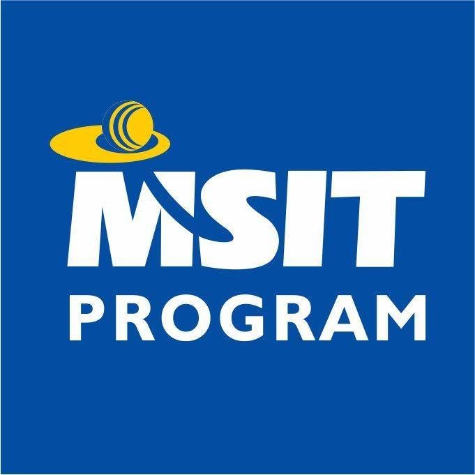

ABOUT ME
Iam Radhika Rani Patnala, presently pursiung my MS(I.T) course from Sri Venkateshwara University(SVU).
Previously I graduated from KLCE.
In MS(I.T) ,I learnt knowledge in various programming languages like:
- C Language and Java
- Algorithms and DBMS
- SoftwareEngg and Web Programming
CloudComputing and CompuetrNetworks
CyberSecurity and Python&
Python and Android Programming
My Experience in MS(I.T)
Earlier I didnt had any knowledge on coding but now I got enough knowledge since we practically do in this course
by ending up each course with a Project.
MSIT helped me to learn things by my own....
I have really enjoyed my work.
I had more interest in cyber security and front end designing.
It is a wonderful course as any engineering graduate can learn I.T ; without prior knowledge of it.
HTML Forms
My Projects
| Project Name |
Language/Knowledge Used |
| Library MangementSystem |
C |
| PayPal Project |
Java |
| Snakes&Ladders Project |
Web Programming |
| Sunshine Project |
Android Programming |